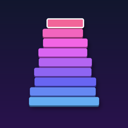

One tap. Stack as high as you can. A free arcade game for iPhone and iPad with Endless mode, a Daily Tower shared by every player, and Game Center leaderboards. No ads, no in‑app purchases, no data collection.
Questions, bug reports, or ideas? Email xenificity@icloud.com. I usually reply within a couple of days.
Scores not showing on the leaderboard? Make sure you're signed in to Game Center in Settings → Game Center, then relaunch the app.
No sound? Check the speaker toggle on the main menu and your phone's silent switch.
StackDrop collects no data. Read the full Privacy Policy.
© 2026 Ajay Kumar